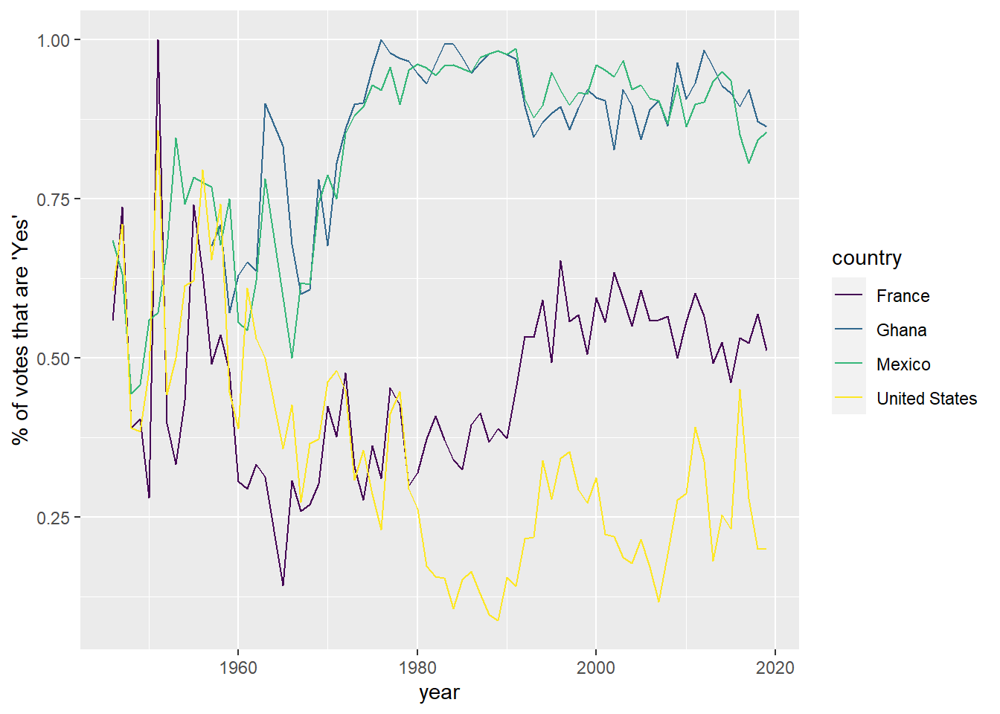
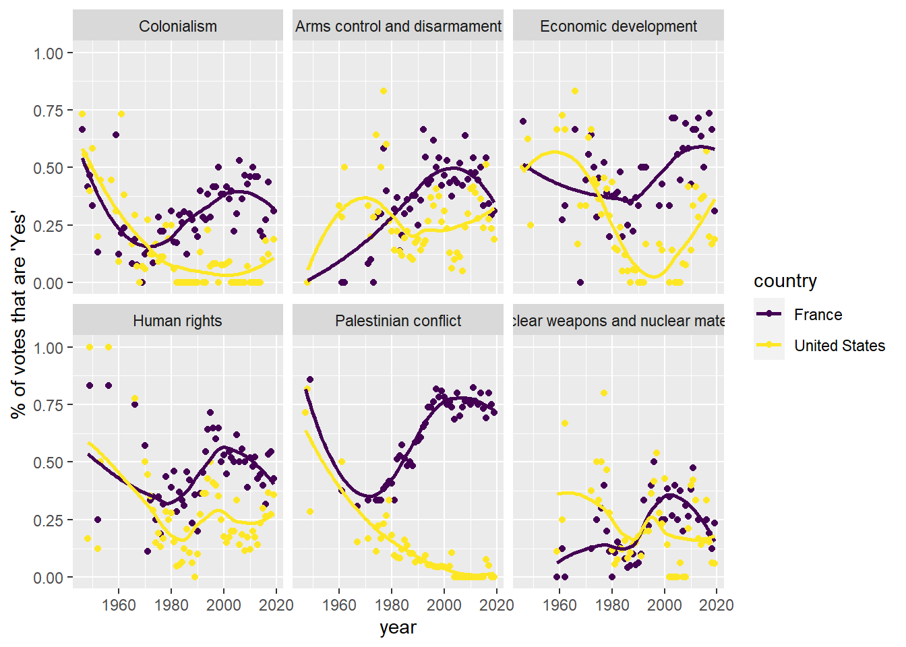

1 + 1[1] 2Quarto enables you to weave together content and executable code into a finished document. To learn more about Quarto see https://quarto.org.
When you click the Render button a document will be generated that includes both content and the output of embedded code. You can embed code like this:
1 + 1[1] 2You can add options to executable code like this
[1] 4The echo: false option disables the printing of code (only output is displayed).
For the remainder of class, we are going to look at the voting history of countries in the United Nations General Assembly using data from package unvotes (and start getting familiar with R along the way).
library(tidyverse)
library(lubridate)
library(DT)
library(viridis)
library(unvotes)We will work with three data sets: un_roll_calls, un_roll_call_issues, and un_votes. Each data set contains a variable called rcid, the roll call id, which can be used to join the data sets with one another.
– The un_votes data set provides information on the voting history of the United Nations General Assembly. It contains one row for each country/vote pair.
un_votes# A tibble: 869,937 × 4
rcid country country_code vote
<dbl> <chr> <chr> <fct>
1 3 United States US yes
2 3 Canada CA no
3 3 Cuba CU yes
4 3 Haiti HT yes
5 3 Dominican Republic DO yes
6 3 Mexico MX yes
7 3 Guatemala GT yes
8 3 Honduras HN yes
9 3 El Salvador SV yes
10 3 Nicaragua NI yes
# … with 869,927 more rowsCreate a new code chunk below and use the function View on the un_votes data set. Run the code. You should see a new window pop it where you can clearly see the entire data set.
Create another new code chunk. Practice pulling out columns of the data set with the $ sign. Pull out the vote column. In a seperate line of code, pull out country_code
The un_roll_calls data set contains information on each roll call vote of the United Nations General Assembly.
un_roll_calls# A tibble: 6,202 × 9
rcid session importantvote date unres amend para short descr
<int> <dbl> <int> <date> <chr> <int> <int> <chr> <chr>
1 3 1 0 1946-01-01 R/1/66 1 0 AMENDMENTS,… "TO …
2 4 1 0 1946-01-02 R/1/79 0 0 SECURITY CO… "TO …
3 5 1 0 1946-01-04 R/1/98 0 0 VOTING PROC… "TO …
4 6 1 0 1946-01-04 R/1/107 0 0 DECLARATION… "TO …
5 7 1 0 1946-01-02 R/1/295 1 0 GENERAL ASS… "TO …
6 8 1 0 1946-01-05 R/1/297 1 0 ECOSOC POWE… "TO …
7 9 1 0 1946-02-05 R/1/329 0 0 POST-WAR RE… "TO …
8 10 1 0 1946-02-05 R/1/361 1 1 U.N. MEMBER… "TO …
9 11 1 0 1946-02-05 R/1/376 0 0 TRUSTEESHIP… "TO …
10 12 1 0 1946-02-06 R/1/394 1 1 COUNCIL MEM… "TO …
# … with 6,192 more rowsThe un_roll_call_issues data set contains issue classifications of roll call votes of the United Nations General Assembly. There are many votes that have no issue classification, and some are classified under more than one issue.
un_roll_call_issues# A tibble: 5,745 × 3
rcid short_name issue
<int> <chr> <fct>
1 77 me Palestinian conflict
2 9001 me Palestinian conflict
3 9002 me Palestinian conflict
4 9003 me Palestinian conflict
5 9004 me Palestinian conflict
6 9005 me Palestinian conflict
7 9006 me Palestinian conflict
8 128 me Palestinian conflict
9 129 me Palestinian conflict
10 130 me Palestinian conflict
# … with 5,735 more rowsWe begin by looking at how often each country voted “yes” on a resolution in each year. How could we visualize the percentage of yes’s for the US, Ghana, Mexico, and France?
The goal of this exercise is NOT for you to learn every function perfectly. We are training are braing to think critically about code.
country_list <- c("United States", "Ghana", "Mexico", "France")
un_votes |>
filter(country %in% country_list) |>
inner_join(un_roll_calls, by = "rcid") |>
group_by(year = year(date), country) |> #group by doesn't change how the data look. It changes how
#the data act with other functions
summarize(votes = n(),
percent_yes = mean(vote == "yes")) |>
ggplot(mapping = aes(x = year, y = percent_yes, color = country)) +
geom_line() +
ylab("% of votes that are 'Yes'") +
scale_color_viridis_d() 
Consider the plot from Part 1. Describe how the voting behaviors of the four countries have changed over time.
What are you left wondering? What other questions could we ask?
Let’s take a look at how voting records have changed for each issue.
un_votes %>%
filter(country %in% c("United States", "France")) %>%
inner_join(un_roll_calls, by = "rcid") %>%
inner_join(un_roll_call_issues, by = "rcid") %>%
group_by(country, year = year(date), issue) %>%
summarize(votes = n(),
percent_yes = mean(vote == "yes")) %>%
filter(votes > 5) %>% # Only use records where there are more than 5 votes
ggplot(mapping = aes(x = year, y = percent_yes, color = country)) +
geom_point() +
geom_smooth(method = "loess", se = FALSE) +
ylab("% of votes that are 'Yes'") +
facet_wrap(~ issue) +
scale_color_viridis_d() 
– On which issues have the two countries voted most similarly over time?
– On which issues have they voted most differently over time?